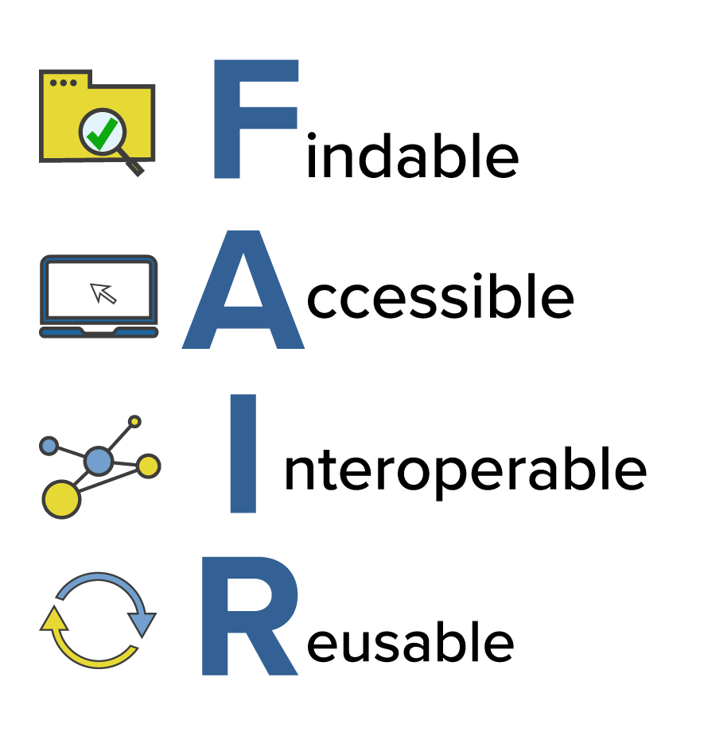

Papercheck
https://scienceverse.github.io/talks/2025-papercheck-intro/
Abstract
In this talk, I will introduce Papercheck, a new tool that leverages text search, code, and large language models to extract and supplement information from scientific documents (including manuscripts, submitted or published articles, or preregistration documents) and provides automated suggestions for improvement.
Inspired by practices in software development, where automated checks (e.g., CRAN checks for R packages) are used to identify issues before release, Papercheck aims to screen scientific manuscripts to identify potential issues or areas for improvement and guide researchers in adopting best practices. It can also assist with processing large numbers of papers for metascientific enquiry.
The Problem
Best Practices are Rapidly Evolving


Un-FAIR Meta-Data


- All research outputs should be FAIR
- PDFs are where data goes to die
- Meta-data use cases:
- facilitating meta-analyses
- improving the re-use of reliable measures
- meta-scientific research
Solutions
Checklists?


Automated Checks
- Time-efficient
- Requires less expertise
- Reproducible
- Generates machine-readable metadata
Automation Strategies
Grobid: A machine learning software for extracting structured information from scholarly documents
And then…

R Package

Paper Import
-------------
debruine-fret
-------------
Facial resemblance enhances trust
* Sections: 8
* Sentences: 174
* References: 22
* Citations: 25Batch Import
--------------
debruine-child
--------------
Resemblance to self increases the appeal of child faces to both men and women
* Sections: 14
* Sentences: 184
* References: 23
* Citations: 48-------------
debruine-fret
-------------
Facial resemblance enhances trust
* Sections: 8
* Sentences: 174
* References: 22
* Citations: 25------------
debruine-sex
------------
Facial resemblance increases the attractiveness of same-sex faces more than other-sex faces
* Sections: 11
* Sentences: 179
* References: 40
* Citations: 48------------
debruine-tnl
------------
Trustworthy but not lust-worthy: context-specific effects of facial resemblance
* Sections: 6
* Sentences: 101
* References: 32
* Citations: 39Text Search
| text | section | header | div | p | s | id |
|---|---|---|---|---|---|---|
| The shape-colour morphs were based on pictures of Caucasians and non-bearded men (n = 11), while the shape-only morphs were based on images of non-white persons (n = 9) and men with facial hair (n = 4). | method | METHODS (a) Preparation of facial stimuli | 2 | 3 | 4 | debruine-fret |
| The 11 subjects who saw shape-colour morphs as stimuli were more trusting of self morphs than of non-self ) number of prosocial responses (‘trusting’ as P1 and ‘unself ish’ as P2) in resemblance experiments using shapecolour morphs (n = 11) and shape-only morphs (n = 13). | results | RESULTS | 6 | 1 | 1 | debruine-fret |
| Subjects for both morphing techniques showed more trust in self morphs than in non-self morphs ( p Ͻ 0.05), but unself ish plays were not affected by facial resemblance. morphs when playing P1 (t 10 = 2.63, p = 0.013), but as P2, they were equally unself ish towards both types of morph (t 10 = 0.00, n.s.). | results | RESULTS | 6 | 1 | 2 | debruine-fret |
| The 13 subjects who saw shape-only morphs as stimuli behaved similarly, trusting self morphs more than non-self morphs as P1 (t 12 = 2.13, p = 0.028), but failing to discriminate between self and non-self morphs as P2 (t 12 = 0.37, n.s.) (f igure 4). | results | RESULTS | 6 | 1 | 3 | debruine-fret |
| Combining the data for all 24 subjects and using a difference score for number of prosocial plays to self-morphs minus non-self morphs, there were no signif icant effects of sex (F 1,23 = 0.13, p = 0.73), ‘race’ (white versus nonwhite; F 1,23 = 0.83, p = 0.38) or morph type (shape-colour morphs versus shape-only morphs; F 1,23 = 0.13, p = 0.73), nor were there any statistically signif icant interactions (all p Ͼ 0.50). | results | RESULTS | 6 | 2 | 1 | debruine-fret |
| In other words, these control players did not play differentially towards faces that had been self morphs versus non-self morphs for the original subjects, neither in their trusting responses as P1 (t 23 = Ϫ1.50, n.s.) nor in their self ish choices as P2 (t 23 = Ϫ0.35, n.s.) (f igure 5). | results | RESULTS | 6 | 3 | 2 | debruine-fret |
| The attractiveness ratings by the independent set of 10 judges also showed no difference; the faces that had served as self morphs for the original subjects were actually rated slightly less attractive (M = 4.11 ± 1.17 s.d. on a 10-point scale) than the non-self morphs (M = 4.27 ± 1.13 s.d.), but the difference was not signif icant. | results | RESULTS | 6 | 4 | 1 | debruine-fret |
| Moreover, there was no difference in attractiveness ratings between morphed images that did or did not elicit trust from subjects playing P1 (M trusting = 4.11 ± 1.06, M not trusting = 4.11 ± 1.22, t 141 = 0.00, n.s.), nor between those that elicited self ish and unselfish moves by subjects playing P2 (M self ish = 4.30 ± 1.18, M unself ish = 4.26 ± 1.20, t 142 = Ϫ0.18, n.s.). | results | RESULTS | 6 | 4 | 2 | debruine-fret |
| those that did not (M trust = 4.14 ± 1.04, M no trust = 4.28 ± 1.25, t = Ϫ0.53, n.s.). | results | RESULTS | 6 | 5 | 1 | debruine-fret |
| In the P1 role, subjects trusted ‘famous’ opponents 1.40 times on average and non-famous opponents 1.25 times (t 19 = 0.51, n.s.). | results | RESULTS | 6 | 5 | 3 | debruine-fret |
| In the P2 role, subjects responded unselfishly to a trusting move by a famous P1 1.70 times and by a non-famous P1 1.80 times (t 19 = Ϫ0.42, n.s.). | results | RESULTS | 6 | 5 | 4 | debruine-fret |
| Following the logic of inclusive fitness theory (Hamilton 1964), P1 is expected to be indifferent between trusting and not trusting if the coeff icient of relatedness between the players is zero (r = 0) and P2’s probability of a self ish betrayal of trust is equal to the probability of reciprocating trust (that is, if p = 0.5 for both moves), because the expected pay-off is the same in each case. | discussion | DISCUSSION | 7 | 4 | 2 | debruine-fret |
| Bars represent the average (± s.e.) number of prosocial responses (‘trusting’ as P1 and ‘unself ish’ as P2) in resemblance experiments using shapecolour morphs (n = 11) and shape-only morphs (n = 13). | fig | Figure 4 . | 3 | 1 | 6 | debruine-fret |
LLM
llm_subjects <- papers |>
search_text("\\d+|one|two|three|four|five|six|seven|eight|nine|ten|eleven|twelve", section = "method") |>
search_text(return = "section") |>
llm(query = 'How many subjects were in the studies in total? Return your answer in JSON format like {"total": 100, men": 42, "women": 58}, giving the total and any subgroupings by gender. Only return valid JSON, no notes.')
llm_subjects |> json_expand()| id | answer | total | men | women |
|---|---|---|---|---|
| debruine-child | {“total”: 71, “men”: 32, “women”: 39} | 71 | 32 | 39 |
| debruine-fret | {“total”: 48, “men”: 24, “women”: 24} | 48 | 24 | 24 |
| debruine-sex | {“total”: 136, “men”: 86, “women”: 50} | 136 | 86 | 50 |
| debruine-tnl | {“total”: 144, “men”: 66, “women”: 78} | 144 | 66 | 78 |
Modules
* all_p_values: List all p-values in the text, returning the matched text (e.g., 'p = 0.04') and document location in a table.
* all_urls: List all the URLs in the main text.
* effect_size: Detect t-tests and F-tests with missing effect sizes
* exact_p: List any p-values reported with insufficient precision (e.g., p < .05 or p = n.s.)
* marginal: List all sentences that describe an effect as 'marginally significant'.
* osf_check: List all OSF links and whether they are open, closed, or do not exist.
* ref_consistency: Check if all references are cited and all citations are referenced
* retractionwatch: Flag any cited papers in the RetractionWatch database
* statcheck: Check consistency of p-values and test statistics
Use `module_help("module_name")` for help with a specific moduleModules: StatCheck
This module uses the {statcheck} package to check the consistency of p-values and test statistics.
We detected possible errors in test statistics
| id | stats_found | stats_error | decision_error |
|---|---|---|---|
| 0956797614566469 | 0 | 0 | 0 |
| 0956797615569001 | 2 | 0 | 0 |
| 0956797615569889 | 19 | 0 | 0 |
| 0956797615583071 | 22 | 0 | 0 |
| 0956797615588467 | 5 | 1 | 0 |
Showing 5 of 5 rows
It currently only works for APA-formatted stats, but we are working on an extended version.
Modules: Exact P-Values
This module scans the text for all p-values and flags those reported inexactly, such as p < .01, p < .10, or p = n.s.
You may have reported some imprecise p-values
| id | exact_p | imprecise_p |
|---|---|---|
| 0956797613520608 | 6 | 0 |
| 0956797614522816 | 39 | 0 |
| 0956797614527830 | 10 | 3 |
| 0956797614557697 | 16 | 11 |
| 0956797614560771 | 3 | 1 |
| 0956797614566469 | 0 | 0 |
| 0956797615569001 | 2 | 23 |
| 0956797615569889 | 24 | 2 |
| 0956797615583071 | 21 | 3 |
| 0956797615588467 | 13 | 8 |
Showing 10 of 10 rows
Modules: Marginal Significance
This module searches the text for phrases such as “marginally significant” or “borderline significance” and flags them.
You described effects as marginally/borderline/close to significant. It is better to write ‘did not reach the threshold alpha for significance’.
| text | section | div | p | s |
|---|---|---|---|---|
| Although the PTSD group showed a significant facilitation effect (M = 0.68), F(1, 15) = 5.575, p … | results | 11 | 1 | 4 |
| A marginally significant negative correlation was found between suppression-induced forgetting on… | results | 13 | 1 | 4 |
| When we more closely matched depression symptoms by comparing the low-BDI-II PTSD group with the … | results | 14 | 3 | 1 |
| In that analysis, the group difference in suppression-induced forgetting only approached signific… | results | 15 | 1 | 2 |
Showing 4 of 4 rows
Modules: Inaccessible Resources
This module scans text for references to OSF projects and checks their status, flagging users if any of the links are either broken or lead to inaccessible private projects.
| id | osf.open | osf.closed | osf.invalid |
|---|---|---|---|
| 0956797613520608 | 0 | 0 | 0 |
| 0956797614522816 | 0 | 0 | 0 |
| 0956797614527830 | 0 | 0 | 0 |
| 0956797614557697 | 2 | 0 | 0 |
| 0956797614560771 | 0 | 0 | 0 |
| 0956797614566469 | 0 | 0 | 0 |
| 0956797615569001 | 1 | 0 | 0 |
| 0956797615569889 | 0 | 1 | 0 |
| 0956797615583071 | 2 | 0 | 0 |
| 0956797615588467 | 0 | 0 | 0 |
Modules: Reference Consistency
This modules checks for missing references or citations.
This module relies on Grobid correctly parsing the references. There may be some false positives.
There are references that are not cited or citations that are not referenced
| bib_id | ref | bibtype | title | journal | year | authors | missing |
|---|---|---|---|---|---|---|---|
| b3 | Bressan P, Grassi M (Bressan, P., & Grassi, M. Parental. resemblance in one-year-olds and the Gau… | Article | resemblance in one-year-olds and the Gaussian curve | Evolution and Human Behavior | Bressan, P., & Grassi, M. Parental. resemblance in one-year-olds and the Gaussian curve. Evolutio… | P Bressan, M Grassi | citation |
| b8 | Debruine LM (Submitted for publication). “Context-specific responses to a cue of kinship: Facial … | Article | Context-specific responses to a cue of kinship: Facial resemblance increases the attractiveness o… | Proceedings of the Royal Society of London B | Submitted for publication | L M Debruine | citation |
Showing 2 of 2 rows
Modules: Retracted Papers
This module searches the RetractionWatch database for all cited references in a paper and flags those that have been retracted.
Promoting Adoption

Center for Open Science
Workflows


Thank You!
papercheck - download the package or submit issues
VeriSci - join a community to create or test modules
@debruine - see what else I’m up to